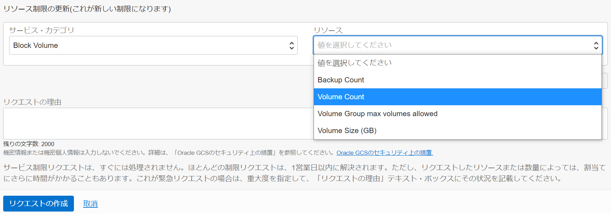
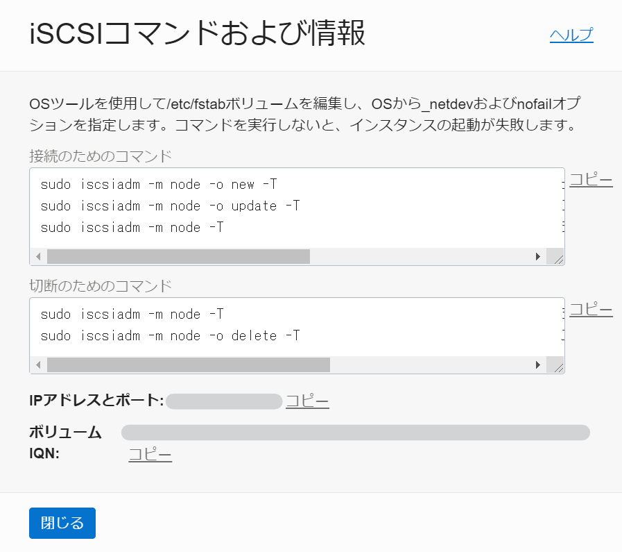

課金を完全に停止するには?
質問
コンピュート・インスタンスをすべて削除しましたが、ブロック・ボリュームに対する課金が継続しています。完全に課金を停止するためには、何を確認すべきですか?
回答
ブロック・ボリューム(またはブート・ボリューム)は、リソースが削除されるまで課金が継続します。下記３つの観点で全てのリソースが削除されているかを確認してください。
-
ブート・ボリュームの削除
コンピュート・インスタンスの削除時に「アタッチされたブート・ボリュームを完全に削除」というチェック・ボックスを有効にしない限り、ブート・ボリュームは削除されません。
不要な場合は、チェックを有効化した上でコンピュート・インスタンスを終了してください。
チェックを有効化せずに終了した場合、Oracle Cloud Infrastructure ドキュメント：ブート・ボリュームの削除 手順に従って、不要なボリュームを削除してください。 -
ブロック・ボリュームの削除
コンピュート・インスタンスを削除しても、アタッチされたブロック・ボリュームが同時に削除されることはありません。Oracle Cloud Infrastructure ドキュメント：ボリュームの削除 手順に従って、不要なボリュームを削除してください。
なお、コンピュート・インスタンスにアタッチされた状態では削除ができません。Oracle Cloud Infrastructure ドキュメント：ボリュームのデタッチ 手順に従って、デタッチを行ってください。 -
バックアップの削除
手動で作成したバックアップは、バックアップ元のボリュームを削除しても、同時に削除されることはありません。(ただし、ポリシー・ベースで取得したバックアップは、ボリュームの削除と共に削除されます)
ブロック・ボリューム(またはブート・ボリューム)のバックアップ一覧を確認し、不要なバックアップを削除してください。
複数ボリュームの同時点のバックアップを取得するには?
質問
コンピュート・インスタンスに複数のブロック・ボリュームをアタッチしています。 ブート・ボリュームを含めた全てのボリュームに対して、同一時点でのバックアップを取得したいと考えています。 どのように取得できますか?
回答
ボリューム・グループを構成することで、対象の ブロック・ボリューム および ブート・ボリューム を含めた複数のボリュームに対するバックアップが取得可能です。
ただし、ボリューム・グループに含むことができるのは、最大32個 (最大サイズの制限は128 TB) のボリュームです。また、各ボリュームが所属できるボリューム・グループは 1つのみです。
詳細は Oracle Cloud Infrastructure ドキュメント：ボリューム・グループ および ボリューム・グループ・バックアップ を参照してください。
注意：顧客管理キーを使用して暗号化されたボリュームのリージョン間バックアップに関して
既知の問題として、Vault サービスの暗号化キーを使用して暗号化されたボリュームに対して、クロス・リージョン・コピーが有効なバックアップ・ポリシーを使用している場合、暗号化キーは ボリューム・バックアップとともに宛先リージョンにコピーされません。
暗号化キーの代わりに、宛先リージョンのボリューム・バックアップ・コピーは、Oracleが提供するキーを使用して暗号化されます。
回避策などの詳細については スケジュール済のリージョン間バックアップ・コピーでボールト暗号化キーが宛先リージョンにコピーされない問題 をご参照ください。
バックアップにかかるストレージ料金はどのように確認できますか?
質問
ブロック・ボリューム(またはブート・ボリューム)のバックアップを取得しています。バックアップにかかる料金はどのように計算されますか?また、どのように確認できますか?
回答
ブロック・ボリューム(またはブート・ボリューム)のバックアップは、Oracle Cloud Infrastructure オブジェクト・ストレージ に保存され、そのサイズに応じて、オブジェクト・ストレージの料金がかかります。階層は、常に Standard (標準) 層です。オブジェクト・ストレージの価格については、Object Storageの価格 を参照してください。
バックアップのサイズは、コンソール画面から確認ができます。
-
ブロック・ボリューム
コンソール画面 → ストレージ → ブロック・ストレージ → ブロック・ボリュームのバックアップ にアクセスし、バックアップ・リストの「バックアップ・サイズ/ボリューム・サイズ(GB)」から確認します。
-
ブート・ボリューム
コンソール画面 → ストレージ → ブロック・ストレージ → ブート・ボリューム・バックアップ にアクセスし、バックアップ・リストの「バックアップ・サイズ/ボリューム・サイズ(GB)」から確認します。
なお、バックアップを複数世代 取得している場合などに、古い世代を削除すると、その次の世代のバックアップ・サイズが古い世代のサイズを考慮した値で 更新されます。
例えば、世代１：フルバックアップ 50GB、世代２：増分バックアップ 2GB、世代３：増分バックアップ 5GB、とあった場合に、世代１を削除すると、世代２のバックアップ・サイズが、前の世代のサイズを含む「52GB」のように更新されます。
これは、OCI のブロック・ボリュームが、前の世代を削除された場合も、次の世代に影響なく復元できる仕様になっているためです。従って、古い世代を削除することが 必ずしも容量削減につながらない可能性があることに注意してください。
詳細は、OCI技術資料 : ブロック・ボリューム 概要 の バックアップとリストア を参照してください。
顧客管理キーを使用したボリュームの作成方法は?
質問
顧客管理キーを使用し、ブロック・ボリューム(または ブート・ボリューム)を暗号化したいと考えています。
ボリュームの作成時に ボールト と マスター暗号化キー をそれぞれ指定しましたが、「Authorization failed or requested resource not found.」というエラー・メッセージが表示され、作成ができません。
どのように設定すべきですか?
回答
エラー・メッセージの内容から、必要な権限が不足していると考えられます。 キーを使用するためには、「サービス自体にキーの使用が許可されていること」および「ユーザーがリソースにキーを関連づける権限を持っていること」の２つの条件が満たされている必要があります。
-
各サービスがキーを使用する権限
Vault(顧客管理キー)を使用する場合、各サービスに対して Vault サービスの使用権限を付与する必要があります。 ブロック・ボリューム(または ブート・ボリューム)に Vault の使用許可を与える場合のサンプル・ポリシーは以下の通りです。
Allow service blockstorage to use keys in compartment <compartment_name> where target.key.id = '<key_OCID>'詳細は Oracle Cloud Infrastructure ドキュメント：共通ポリシー - ブロック・ボリューム (略) によるボリューム (略) の暗号化と復号化 を参照してください。
-
ユーザーがキーの使用をサービスに委任する権限
ユーザーにキーの委任権限(または包括的な使用権限)がない場合、各サービスに Vault(顧客管理キー)を関連づけることができません。以下のポリシーを参考に、キーの使用を委任する権限を設定してください。
Allow group <group_name> to use key-delegate in compartment <compartment_name> where target.key.id = '<key_OCID>'詳細は Oracle Cloud Infrastructure ドキュメント：共通ポリシー - ユーザー・グループによるコンパートメントのキーの使用の委任 を参照してください。
その他、詳細については、Oracle Cloud Infrastructure ドキュメント：キーの使用 - 必須IAMポリシー も合わせて参照してください。
ボリュームの使用量に対してアラームを設定することは可能?
質問
ブロック・ボリューム(またはブート・ボリューム)の実使用量が、指定した値を超過した際に、通知するようアラームを構成したいと考えています。どのように実現できますか?
回答
ブロック・ボリューム(またはブート・ボリューム)の実使用量は、ブロック・ボリューム・メトリックに含まれていません。そのため、モニタリングを利用して実使用量を監視したい場合は、カスタムメトリックを構成する必要があります。カスタム・メトリックについては、Oracle Cloud Infrastructure ドキュメント：カスタム・メトリックの公開 を参照してください。
大まかな流れとしては、対象のボリュームに対して df や free コマンドを実行し、容量に関する情報を取得します。取得した情報をカスタム・メトリックとして、PostMetricData API を使用し、カスタム・メトリックとして発行します。
または、Oracle Management Cloud サービスを使用し、監視することも可能です。
特定のリソースに関する操作ログの確認方法は?
質問
監査(Audit)ログを利用し、ブロック・ボリュームの削除など、特定のブロック・ボリューム(またはブート・ボリューム)に関するアクティビティを監視するには、どのように設定すべきですか?
回答
-
コンソールでの確認方法
コンソールから監査(Audit)ログの確認を行う場合、ロギングの監査ページから検索が行えます。フィルタリング項目にて、対象のリソースや、イベント・タイプを設定することで、特定のリソースに関する、特定のアクティビティを確認することができます。詳細は Oracle Cloud Infrastructure ドキュメント：監査ログのフィルタリング をご参照ください。
参考として、ボリュームに関連する主なイベント・タイプには下記のような種類があります。
イベント・タイプ 操作の概要 com.oraclecloud.BlockVolumes.CreateVolume.begin ボリュームの作成を開始 com.oraclecloud.BlockVolumes.DeleteVolume.begin ボリュームの削除を開始 com.oraclecloud.BlockVolumes.UpdateVolume.begin ボリュームのアップデートを開始(サイズの拡張、パフォーマンスの自動チューニングの有効化など) com.oraclecloud.computeApi.AttachVolume.begin コンピュート・インスタンスに対してボリュームのアタッチを開始 com.oraclecloud.computeApi.DetachVolume.begin コンピュート・インスタンスに対してボリュームのデタッチを開始 -
コマンドラインでの確認方法
コマンドラインで監査ログの確認を行う場合は、ログの検索専用の問合せ構文を用いて検索します。下記にコマンドの例を示しますが、詳細は Oracle Cloud Infrastructure ドキュメント：ログの検索 をご参照ください。
oci logging-search search-logs --search-query "search \"<compartment-id>/_Audit\" | sort by datetime desc" --time-start 2021-01-01 --time-end 2021-01-31
ボリュームのサービス制限の引上げ方法
質問
ブロック・ボリューム(またはブート・ボリューム)を作成しようとしましたが、サービス制限に達したため、作成できません。サービス制限の引上げを行うにはどのようにすべきですか?
回答
ブロック・ボリューム(またはブート・ボリューム)を利用するには、「Volume Count」「Volume Size (GB)」に対するリクエストを挙げる必要があります。「Volume Count」はボリュームの数、「Volume Size (GB)」はボリュームの総量を意味しています。
自身のテナントが、どの制限に達しているのかを確認するには、コンソール画面 → ガバナンスと管理 → 制限、割当ておよび使用状況 から確認できます。サービスを「Block Volume」、スコープを「対象の可用性ドメイン」で指定し、現在の使用状況を確認してください。
リクエストは、コンソール画面のヘルプ、または、My Oracle Support より可能です。

ボリュームを別テナントに移動する方法
質問
ブロック・ボリューム(またはブート・ボリューム)を別のテナントに移動したいと考えています。どのように実現できますか?
回答
現時点では、ブロック・ボリュームやブート・ボリュームを直接的に別テナントへ移動することはできません。従って、対象のテナントの コンピュート・インスタンス間で通信できるように構成し、robocopy や rsync コマンドを利用し、ボリューム間でデータをコピーする必要があります。
コンピュート・インスタンス間の通信をプライベートに行いたい場合は、ローカル・ピアリングを構成することで、別テナント間でもプライベート接続が可能です。
なお、移動対象がブート・ボリュームだけであり、且つ、400GB以下のサイズであれば、カスタム・イメージ化し、オブジェクト・ストレージを介することで移動を実現できます。(参考：Oracle Cloud Infrastructure ドキュメント：イメージのエクスポート){:target=”_blank”}
インスタンスがアタッチされたボリュームを認識しない
質問
コンピュート・インスタンスに、ブロック・ボリュームを新規に追加しました。接続方法は、「iSCSI」を選択しています。OSまたはディスク管理で確認すると、追加したブロック・ボリュームが反映されていないようです。この問題を解決する方法を教えてください。
回答
アタッチ・タイプに「iSCSI」を選択した場合、iSCSIコマンドを実行するなど、iSCSI 接続を構成する必要があります。アタッチ完了後、アタッチされたブロック・ボリュームの一覧から、対象のブロック・ボリュームのメニューから「iSCSIコマンドおよび情報」を選択することで、iSCSI 接続を構成するために必要な情報を表示することができます。
詳細については Oracle Cloud Infrastructure ドキュメント：iSCSIコマンドおよび情報 を参照してください。
- Windows OS の場合：Windowsインスタンスへのブロック・ボリュームの追加
- Linux ベース OS の場合：ブロック・ボリュームの追加
下記イメージは、Linux ベース OS の場合の「iSCSIコマンドおよび情報」の例です。

ボリュームをアタッチした後、パーティションやファイルシステムを作成するには?
質問
Linux ベース OS のコンピュート・インスタンスに、ブロック・ボリュームを新規に追加しました。接続は完了しています。追加したボリュームに対して、パーティションや Linux ファイルシステムを作成するには、どうしたら良いですか?
回答
ここでは、例として、Oracle Linux 7.9 での構成手順を示します。ご利用のインスタンスのファイルシステム、および、パーティションテーブルに合わせて、読み替えてください。
1. パーティションの作成
パーティションを作成するボリュームを特定するために、次のコマンドを実行して、アタッチされたブロック・ボリュームをリストします。
$ lsblk
コマンドの結果の例を以下に示します。この例では、「sdc」というボリュームがパーティションを作成する対象のボリュームです。
NAME MAJ:MIN RM SIZE RO TYPE MOUNTPOINT
sdb 8:16 0 50G 0 disk
├ sdb2 8:18 0 8G 0 part [SWAP]
├ sdb3 8:19 0 41.8G 0 part /
└ sdb1 8:17 0 200M 0 part /boot/efi
sdc 8:32 0 55G 0 disk
次に、parted コマンドを実行し、パーティションテーブルを編集します。
$ sudo parted <volume_id>
ボリュームの正確な開始位置がわかるように、次のコマンドを実行して、表示単位をセクターに変更します。
(parted) unit s
次のコマンドを実行して、ラベルを作成します。ここでは、「gpt」を指定します。
(parted) mklabel gpt
次のコマンドを実行して、パーティションを作成します。
(parted) mkpart
-
Partition name? []?： 任意のパーティション名を指定します。例えば、primaryなどです。 -
File system type? [ext2]?： ファイルシステムの種類を指定します。例えば、xfsなどです。 -
Start?： 開始位置を指定します。例えば、0%などです。 -
End?： 終了位置を指定します。例えば、100%などです。
以上でパーティションの作成は完了です。次のコマンドを実行して、partedを終了します。
(parted) quit
再度ボリュームのリストを確認するため、次のコマンドを実行します。
$ lsblk
コマンドの結果の例を以下に示します。この例では、「sdc」というボリュームに sdc1 というパーティションを作成できたことが確認できます。
NAME MAJ:MIN RM SIZE RO TYPE MOUNTPOINT
sdb 8:16 0 50G 0 disk
├ sdb2 8:18 0 8G 0 part [SWAP]
├ sdb3 8:19 0 41.8G 0 part /
└ sdb1 8:17 0 200M 0 part /boot/efi
sdc 8:32 0 55G 0 disk
└ sdc1 8:33 0 55G 0 part
2. マウント・ポイントの作成
次のコマンドを実行し、マウント用のディレクトリを作成し、権限の設定を行います。例として、/mnt/devsdc というディレクトリを作成しています。
$ sudo mkdir /mnt/devsdc
$ sudo chown opc:opc /mnt/devsdc/
3. fstabの編集
インスタンスの起動時に自動でマウントされるよう、/etc/fstab を編集します。
ボリュームの指定方法によって、手順が異なります。
ボリュームの指定方法について
Linux ベースの OSでは、ボリュームがアタッチされる順序は、再起動のたびに変わる可能性があります。ルート以外のボリュームが複数ある場合に、
/dev/sdbのようにデバイス名を使用してボリュームを参照していると、特定のデバイス名に対してマウントしようとするボリュームと、実際にマウントされるボリュームが異なってしまう可能性があります。 この問題を回避するには、/etc/fstabファイル内に、デバイス名のかわりに ボリュームUUID を指定します。もしくは、一貫性のあるデバイス・パスが使用可能なイメージ の場合は、一貫性のあるデバイス・パス を指定します。
3-a. ボリュームUUIDを指定する場合
ボリュームのUUIDを確認するため、次のコマンドを実行します。
$ sudo blkid
次に、fstab を編集するため、次のコマンドを実行します。
$ sudo vi /etc/fstab
下記の例を参考に、fstab ファイルの最後に追記し、保存します。(insert で編集、Esc → :wq で保存して終了、編集をキャンセルする場合は Esc → :q!)
UUID=<確認したUUID> /mnt/devsdc xfs defaults,_netdev,nofail 0 2
<確認したUUID>： ボリュームのUUIDを指定します/mnt/devsdc： 作成したマウント・ポイントを指定します_netdev、nofailオプションを指定する理由については、_netdevおよびnofailオプションの使用 を参照してください。
次のコマンドを実行し、設定を反映します。
$ sudo mount -a
最後に、以下のコマンドを実行することで、アタッチしたブロック・ボリューム が追加されていることが確認できます。
$ df -h
```
**3-b. 一貫性のあるデバイス・パスを指定する場合**
一貫性のあるデバイス・パスを使用する前に、以下に該当しないことを確認してください。
> 1. アタッチしたボリュームが ブート・ボリュームでないこと。(ブート・ボリュームをデータ・ボリュームとして2番目のインスタンスにアタッチする場合、デバイス・パスは使用できません。)
> 2. インスタンスが [一貫性のあるデバイス・パスをサポートしているイメージ](https://docs.oracle.com/ja-jp/iaas/Content/Block/References/consistentdevicepaths.htm#images){:target="_blank"} であること。
> 3. インスタンスへアタッチする際、[デバイス・パスを指定済み](https://docs.oracle.com/ja-jp/iaas/Content/Block/References/consistentdevicepaths.htm#Device_Paths_in_the_Console){:target="_blank"} であること。
次に、一貫性のあるデバイス・パスが正しく構成されていることを確認するため、次のコマンドを実行します。
```sh
$ ll /dev/oracleoci/oraclevd*
以下のような出力がされていれば、問題ありません。
lrwxrwxrwx. 1 root root 6 Feb 7 21:02 /dev/oracleoci/oraclevda -> ../sda
lrwxrwxrwx. 1 root root 7 Feb 7 21:02 /dev/oracleoci/oraclevda1 -> ../sda1
lrwxrwxrwx. 1 root root 7 Feb 7 21:02 /dev/oracleoci/oraclevda2 -> ../sda2
lrwxrwxrwx. 1 root root 7 Feb 7 21:02 /dev/oracleoci/oraclevda3 -> ../sda3
次のコマンドを実行し、fstab を編集します。
$ sudo vi /etc/fstab
下記の例を参考に、fstab ファイルの最後に追記し、保存します。(insert で編集、Esc → :wq で保存して終了、編集をキャンセルする場合は Esc → :q!)
/dev/oracleoci/oraclevdb /mnt/devsdc xfs defaults,_netdev,nofail 0 2
/dev/oracleoci/oraclevdb： 一貫性のあるデバイス・パスを指定します/mnt/devsdc： 作成したマウント・ポイントを指定します_netdev、nofailオプションを指定する理由については、_netdevおよびnofailオプションの使用 を参照してください。
次のコマンドを実行し、設定を反映します。
$ sudo mount -a
最後に、以下のコマンドを実行することで、アタッチしたブロック・ボリューム が追加されていることが確認できます。
$ df -h
ボリュームのサイズの拡張をOSに反映させるには?
質問
ブロック・ボリューム(またはブート・ボリューム)の容量を拡張しましたが、OSまたはディスク管理で確認すると、追加したボリュームが反映されていないようです。この問題を解決する方法を教えてください。
回答
ボリュームを拡張した後は、ディスクの再スキャンが必要です。再スキャン・コマンドを実行することにより、OSが拡張されたディスク・サイズを認識します。
コマンドの詳細については Oracle Cloud Infrastructure ドキュメント：ブロック・ボリュームまたはブート・ボリュームのディスクの再スキャン をご参照ください。
-
Windows OS の場合：Windowsインスタンスにアタッチされたボリュームのディスクの再スキャン
-
Linux ベース OS の場合：Linuxベースのインスタンスにアタッチされたボリュームのディスクの再スキャン
また、ディスクの再スキャン後は、パーティションの拡張も必要です。
ブロック・ボリュームの場合は、ブロック・ボリュームのパーティションの拡張を、ブート・ボリュームの場合は、ブート・ボリュームのパーティションの拡張 を参照してください。
アタッチされているブロック・ボリュームをインスタンス構成に含める方法
質問
インスタンスにアタッチされているブロック・ボリュームをインスタンス構成に含めたいと考えています。設定方法について教えてください。
回答
コンソール画面を使用して インスタンス構成を作成する場合、アタッチされたブロック・ボリュームをインスタンス構成に含めることはできません。
インスタンス構成にブロック・ボリュームのコンテンツを含めるには、まず アタッチされたブロック・ボリュームのバックアップを作成 します。
次に、SDK、CLIまたはAPIを使用し、インスタンス構成を作成する際に、”構成設定” にて、ブロック・ボリュームのバックアップを指定します。インスタンス構成を作成する際の “構成設定” は、以下コマンドを参考に、テンプレートを取得することをおすすめします。
-
“構成設定” テンプレートの取得 [CLI documents ]
oci compute-management instance-configuration create --generate-param-json-input instance-details > template.json
続いて、取得したテンプレートを、作成したいインスタンス構成の内容に応じて 編集します。その際、”blockVolumes” ブロックの “sourceDetails” にて、予め作成したブロック・ボリューム・バックアップの OCID を指定します。
"blockVolumes": {
~ 略 ~
"createDetails": {
"sourceDetails": {
"id":"ocid1.volumebackup.oc1.xxxxxxxxxxxxxxxx",
"type": "volumeBackup"
},
~ 略 ~
最後に、以下のコマンドを参考に、インスタンス構成を作成します。--instance-details パラメータにて、編集した “構成設定” ファイルを指定してください。
-
インスタンス構成の作成 [CLI documents ]
oci compute-management instance-configuration create --compartment-id ocid1.compartment.oc1.xxxxxxxxxxxxxxxx --instance-details file://input.json --display-name instance-config-xxx
なお、その他の注意事項として、インスタンス構成には、インスタンスのブート・ボリュームの情報(インスタンスにインストールされているアプリケーション、バイナリ、ファイルなど)も含まれません。 それらの情報を含むインスタンス構成を作成するには、まずインスタンスからカスタム・イメージを作成し、次にそのカスタム・イメージを使用して新しいインスタンスを起動 する必要があります。
詳細は、Oracle Cloud Infrastructure ドキュメント：インスタンス構成の作成 を参照してください。